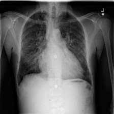

Django Point Of Sale
A project that create a website for Point of Sale using Python and Django framework that include CRUD feature link

Cardiomegaly Disease Classification CNN (Computer Vision)
Classification of Cardiomegaly Disease using Convolutional Neural Network (CNN) with image processing. link
Information Retrieval untuk pidana khusus using BiLSTM (NLP)
Building a simple search engine to find specific criminal cases by entering keywords using NLP. link